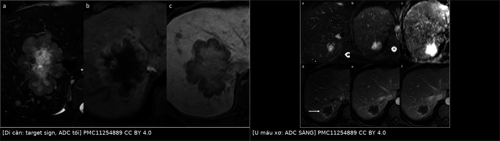
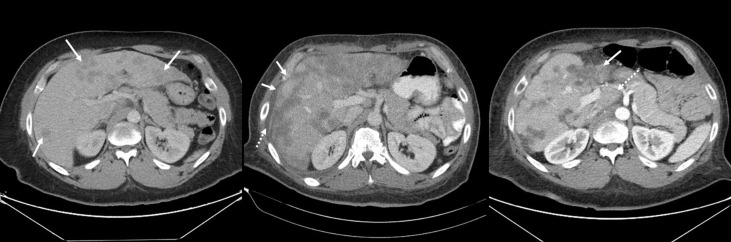
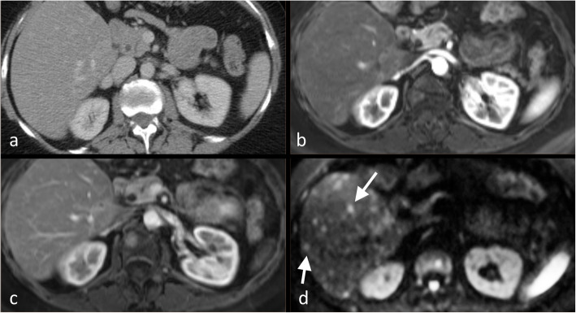
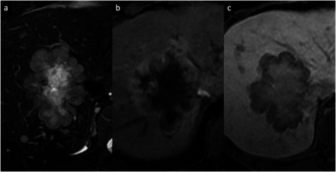

1648 — Di căn gan ở ung thư vú: phân biệt với u máu, gan nhiễm mỡ do điều trị và gan "giả xơ" / Liver metastases from breast cancer: separating them from haemangioma, treatment-induced steatosis and pseudocirrhosis
Tags: pattern:not-gan pattern:nhieu-o pattern:ngam-vien pattern:di-can pattern:gan-nhieu-mo pattern:gia-xo-gan pattern:gia-lanh-hoa vung:gan protocol:CT-bung-co-can-quang protocol:MRI-gan-DWI protocol:PET-FDG score:RECIST-1.1 incidentaloma:u-mau-gan
Mức chắc chắn (certainty): tổng hợp y văn (literature synthesis) — số liệu đọc trực tiếp từ toàn văn: tổng quan hình ảnh di căn ung thư vú (Insights Imaging 2020, PMC7297923), tổng quan đánh giá đáp ứng (Cancer Imaging 2023, PMC10230813), đoàn hệ 86 ca giả xơ (Front Oncol 2021, PMC8283693), meta-analysis 389 ca giả xơ (Sci Rep 2022, PMC9674682), loạt hình ảnh tổn thương gan sau hóa trị (J Clin Imaging Sci 2025, PMC12361689), ngưỡng mỡ gan trên CT (Radiol Bras 2022, PMC9254702), ngấm viền động mạch của u gan (Insights Imaging 2024, PMC11254889); có ca nguyên văn trong quiz.
1. Tổng quan bệnh học – cơ chế hình ảnh
- Tần suất: gan là ổ di căn thường gặp của ung thư vú — tới 60–70% nữ tử vong vì ung thư vú có di căn gan trên tử thiết; trên hình ảnh, tỉ lệ này thấp hơn nhiều vì chỉ phản ánh bệnh đang tiến triển. HER2 dương có xu hướng di căn gan nhiều hơn nhóm ER/PR dương.
- TẠI SAO di căn vú "giảm tỷ trọng" trên CT: mô u giàu tế bào, nghèo glycogen và nghèo mạch xoang kiểu gan → hệ số hấp thụ tia X thấp hơn nhu mô gan bình thường → nhìn thấy giảm tỷ trọng ở thì tĩnh mạch cửa; u ít mạch nên ngấm thuốc chậm, ngấm viền (perilesional) ở thì động mạch. Ngược lại 10–26% di căn vú lại tăng mạch — nhóm này ngấm mạnh ở thì động mạch và liên quan tới bệnh tiến triển; bỏ qua đặc điểm này là bỏ một dấu hiệu tiên lượng.
- Vì sao DWI là chuỗi "cứu" bài này: di căn đặc, mật độ tế bào cao, màng tế bào nguyên vẹn → nước khuếch tán bị hạn chế → DWI sáng, ADC thấp. Trên nền gan nhiều mỡ hoặc sau hóa trị, CT có thể để lọt tổn thương đồng tỷ trọng; khi đó DWI phát hiện được — và đáp ứng điều trị làm ADC thay đổi sớm từ ngày 4–11, trước khi kích thước đổi.
- Độ chính xác theo phương thức (số liệu gộp): CT Se 73–75% / Sp 94–96%; siêu âm 61–65% / 96–98%; MRI 80–82% / 96–98%; FDG-PET/CT 94–96% / 98–99%. Nghĩa là CT là phương thức phổ thông nhưng không đủ nhạy để loại trừ di căn gan.
- Ba cái bẫy "không phải di căn" hay gặp nhất ở bệnh nhân ung thư vú:
- U máu (hemangioma): khoang mạch giãn chứa máu ứ → T2 rất sáng, ADC CAO (T2 shine-through), ngấm nốt ngoại vi rồi lan vào trong (centripetal fill-in), không thải thuốc; không bắt FDG.
- Gan nhiễm mỡ do điều trị: tamoxifen, 5-FU, methotrexate, irinotecan, taxane gây độc ti thể → giảm β-oxy hóa acid béo → tích mỡ trong tế bào gan; CT giảm HU toàn bộ nhu mô (không có tổn thương khu trú), có thể hồi phục trong vài tuần–vài tháng sau ngừng thuốc.
- Gan "giả xơ" (pseudocirrhosis) và tăng sinh nốt tái tạo: sau hóa trị, các ổ di căn co lại và xơ hóa + nhu mô lành tăng sinh bù → bề mặt gan dạng nốt, co kéo bao, teo thùy, phì đại đuôi — giống xơ gan trên ảnh nhưng không phải xơ gan mô học.
- Vì sao "giả xơ" nguy hiểm (định lượng): gộp 389 ca/62 bài: 77,8% là ung thư vú; tăng áp lực tĩnh mạch cửa 79,8% — cổ trướng 43,4%, giãn tĩnh mạch thực quản 24,2%, xuất huyết tiêu hóa 14,1%, huyết khối tĩnh mạch cửa 5%, lách to 15%, bệnh não gan 9,1%. Thời gian từ phát hiện di căn gan đến giả xơ trung vị 8 tháng (IQR 2,5–16,5); từ giả xơ đến tử vong 2 tháng (IQR 1–7) — đây là biến chứng chết người do chính điều trị thành công, không phải "tiến triển".
- Một điểm phản trực giác quan trọng: trong 86 ca, tại lúc chẩn đoán giả xơ có 53,5% đang tiến triển (PD), 15,1% đáp ứng một phần, 2,3% đáp ứng hoàn toàn — tức giả xơ không đồng nghĩa "đang đáp ứng tốt"; nó là biến dạng nhu mô, có thể xuất hiện cả khi bệnh tiến triển.
2. Mẫu hình + chẩn đoán phân biệt theo vị trí (Gamut)
- Khuôn 1 — Nhiều nốt giảm tỷ trọng, rải rác hai thùy, bờ không đều, ngấm viền. Gamut: di căn vú vs di căn ống tiêu hóa/tụy vs áp-xe vi khuẩn/nấm vs di căn buồng trứng – phúc mạc vs u máu không điển hình. Chốt: bối cảnh + DWI + so phim cũ; sinh thiết khi còn do dự.
- Khuôn 2 — Một nốt T2 rất sáng, ngấm nốt ngoại vi, lấp đầy dần. Gamut: u máu điển hình vs di căn tăng mạch vs u máu xơ hóa (sclerosed hemangioma) vs EHE. Chốt: ADC cao + fill-in hoàn toàn = u máu; ADC thấp + không fill-in = di căn.
- Khuôn 3 — Gan giảm HU lan tỏa, không có tổn thương khu trú. Gamut: nhiễm mỡ do thuốc vs gan nhiễm mỡ chuyển hóa (MASLD) vs viêm gan do thuốc vs thâm nhiễm u lan tỏa (diffuse infiltration). Chốt: đo HU + so với lách + tìm dấu hiệu thâm nhiễm (mạch máu bị "xóa", bờ gan nốt).
- Khuôn 4 — Bề mặt gan dạng nốt, co kéo bao, teo thùy trái, đuôi phì đại, cổ trướng. Gamut: giả xơ sau điều trị vs xơ gan thật (HBV/rượu/MASLD) vs hepar lobatum carcinomatosum (thâm nhiễm u lan tỏa) vs xơ gan do tắc mật. Chốt: tiền sử di căn gan + hóa trị nhiều đợt + không có dấu hiệu xơ gan mạn; sinh thiết khi cần phân biệt thâm nhiễm u.
- Khuôn 5 — Nốt mới xuất hiện trong lúc đang đáp ứng điều trị. Gamut: di căn mới vs nốt tái tạo lành tính (FNH-like) vs ổ xơ hóa/hoại tử sau điều trị vs áp-xe. Chốt: nốt tái tạo bắt thuốc mô gan ở thì gan mật (hepatobiliary); di căn thì giảm tín hiệu ở thì này.
- Gợi nhớ "LIVER": Lobular (thể tiểu thùy hay di căn gan/phúc mạc) · Isodense on CT (bỏ sót) · Vascular rim (ngấm viền) · Extrahepatic + Elevated enzymes · Review old scans (so sánh là bắt buộc).
3. Bảng so sánh phân biệt (ma trận đối chiếu)
| Thực thể (entity) | Hình ảnh điển hình (CT / MRI / PET) | Chốt vào (rule-in) | Chốt loại (rule-out) | Gợi ý xác nhận |
|---|---|---|---|---|
| Di căn ung thư vú | Nhiều nốt giảm tỷ trọng, bờ không đều, ngấm viền thì động mạch; T1 tối, T2 trung bình, DWI sáng/ADC thấp; 10–26% tăng mạch | Nhiều ổ + bờ không đều + ngấm viền + ADC thấp + tiền sử ung thư vú | ADC cao, ngấm nốt ngoại vi lấp đầy, T2 rất sáng → u máu | MRI có DWI/ADC; sinh thiết nếu CT đơn thuần; RECIST trên CT |
| U máu hang (cavernous hemangioma) | T2 rất sáng, ADC cao, ngấm nốt ngoại vi rồi lấp đầy vào giữa, không thải thuốc; FDG âm | Fill-in hoàn toàn + ADC cao + không bắt FDG | ADC thấp + không fill-in + bắt FDG → không phải u máu | MRI đa thì; theo dõi nhiều năm |
| U máu xơ hóa (sclerosed) | T2 sáng ít hơn u máu điển hình, ADC vẫn cao, ngấm viền tồn tại ở thì muộn, có thể co kéo bao | ADC cao + ngấm viền dai dẳng + co kéo bao | ADC thấp → nghi di căn | Sinh thiết khi không chắc |
| Gan nhiễm mỡ do thuốc | Giảm HU lan tỏa, mạch máu nổi bật tương phản, ± vùng chừa mỡ cạnh túi mật | Gan < 40 HU, hoặc thấp hơn lách ≥ 10 HU; 48 HU đặc hiệu cao cho mỡ vừa–nặng | Có nốt khu trú ngấm viền → không chỉ là mỡ | CT không cản quang; PDFF (ngưỡng 5%) nếu cần định lượng |
| Gan giả xơ (pseudocirrhosis) | Bờ gan dạng nốt 97,7%, co kéo bao 82,6%, phì đại đuôi 67,4%, teo thùy 61,6%, cổ trướng, giãn tĩnh mạch | Tiền sử di căn gan + nhiều đợt hóa trị + bờ nốt/co kéo bao | Gan bờ nhẵn, không co kéo → không phải giả xơ | CT có cản quang; nội soi khi có giãn tĩnh mạch; sinh thiết nếu nghi thâm nhiễm |
| Nốt tái tạo lành tính (FNH-like/NRH) | Nốt bắt thuốc mô gan ở thì gan mật, không thải thuốc; thường nhỏ, nhiều nốt | Đồng tín hiệu với gan ở thì gan mật (HBP) | Giảm tín hiệu ở HBP → nghi di căn | MRI với Gd-EOB-DTPA |
| Áp-xe / viêm gan do thuốc | Ổ mức khí–dịch, ngấm viền dày; hoặc phù quanh cửa, dày thành túi mật, nhu mô không đều | Sốt + CRP/bạch cầu tăng + mức khí–dịch | Không sốt, không ổ dịch | Cấy máu/dịch; CT lặp sau 3–5 ngày |
| HCC trên nền xơ gan | Nốt ngấm mạnh thì động mạch + thải thuốc (washout), vỏ bao, tăng kích thước | APHE + washout + vỏ bao + gan xơ | Không washout, không vỏ bao, gan không xơ | LI-RADS trên MRI/CT đa thì |

Trái: di căn gan từ ung thư vú thể ống tuyến — (a) T2 FS có "target sign" (trung tâm xơ sáng, viền u tối–trung bình), (b) ngấm viền ở thì động mạch, (c) thì gan mật "targetoid" với trung tâm tương đối sáng. Phải: u máu xơ hóa — (a) T2 sáng, (b) DWI sáng nhưng (c) ADC SÁNG (T2 shine-through, không hạn chế khuếch tán), (d–f) ngấm viền tồn tại ở các thì muộn. Cùng "ngấm viền" nhưng ADC đảo ngược hoàn toàn. Nguồn: Matteini F và cs., Insights Imaging 2024, Fig. 11 và Fig. 2 (CC BY 4.0).Đọc đúng "ngấm viền" (rim arterial phase hyperenhancement, APHE)
- Ngấm viền KHÔNG đồng nghĩa di căn. Trong dân số không xơ gan, ngấm viền gặp ở u máu xơ hóa, áp-xe, EHE, cholangiocarcinoma trong gan, HCC và di căn.
- Ba câu hỏi tách nhóm: (1) ADC cao hay thấp — cao = u máu/T2 shine-through; (2) viền có lấp đầy vào giữa không — có = u máu; (3) thì gan mật có "targetoid" không — có = ác tính.
- Di căn vú thường có trung tâm xơ hóa (do đáp ứng điều trị) tạo "target sign" trên T2 và "targetoid" ở thì gan mật — dấu hiệu này giữ nguyên dù kích thước thu nhỏ, nên đừng gọi là "không đáp ứng" chỉ vì còn targetoid.
4. Protocol chụp + hệ phân độ/điểm chuẩn hóa
Bước 1 — CT bụng–chậu có cản quang là chuẩn thực hành (nhưng phải làm đúng):
- Thì tĩnh mạch cửa 60–70 giây, lát ≤ 5 mm (tốt nhất 1,25 mm) — vì RECIST 1.1 yêu cầu tổn thương đo được ≥ 10 mm trên lát ≤ 5 mm.
- Đo gan không cản quang trên cùng lần chụp: < 40 HU hoặc thấp hơn lách ≥ 10 HU = nhiễm mỡ; 48 HU có độ đặc hiệu cao cho mỡ vừa–nặng.
- Ghi 5 con số: số tổn thương · đường kính tổn thương lớn nhất · HU gan · HU lách · có/không co kéo bao/dạng nốt.
Bước 2 — Khi CT mơ hồ hoặc cần đếm chính xác: MRI gan:
- Chuỗi tối thiểu: T1 in-phase/opposed-phase (mỡ), T2 FS, DWI b = 50–100 và 800–1.000 + ADC, T1 FS động học (động mạch–cửa–muộn); thêm Gd-EOB-DTPA khi cần tách nốt tái tạo khỏi di căn.
- ADC đo bằng ROI trong phần đặc, tránh hoại tử/xơ — vì trung tâm xơ của di căn đã đáp ứng có ADC cao, dễ đọc sai là "lành".
Bước 3 — RECIST 1.1 (bản 2009) áp trên gan:
- Tổn thương đo được: nốt ≥ 10 mm trên CT lát ≤ 5 mm; hạch ≥ 15 mm trục ngắn.
- Tối đa 5 tổn thương đích toàn bộ, tối đa 2 mỗi cơ quan; cộng đường kính (sum of diameters).
- Đáp ứng một phần (PR): giảm ≥ 30% tổng; tiến triển (PD): tăng ≥ 20% và tăng tuyệt đối ≥ 5 mm; bệnh ổn định ở giữa.
- Không dùng RECIST cho tổn thương xơ (sclerotic) hay nang thuần — đây là lỗi hay gặp khi đánh giá di căn gan đã điều trị.
Bước 4 — Khi nào PET/CT: CT/MRI chưa chốt; nghi di căn ngoài gan; thể tiểu thùy (bắt FDG kém hơn thể ống tuyến, nên PET âm không loại trừ); theo dõi "bệnh chỉ có ở gan" khi cần phân biệt mô xơ sau điều trị (FDG âm) với u sống (FDG dương).
Bước 5 — Sinh thiết gan: khi nào?
- Có chỉ định khi: tổn thương gan là ổ di căn đầu tiên và chưa rõ nguồn; cần xác định lại thụ thể (ER/PR/HER2) vì thụ thể có thể đổi giữa u nguyên phát và di căn; nghi u nguyên phát thứ hai (HCC, cholangiocarcinoma); nghi lymphoma.
- Cân nhắc trước khi: tổn thương dễ lấy nhưng bệnh nhân giảm tiểu cầu/rối loạn đông hoặc chỉ có một ổ duy nhất có thể mổ được.
flowchart TD
A[BN ung thu vu, CT thay not gan giam ty trong] --> B{So phim cu + do HU gan/lach}
B -->|Gan < 40 HU lan toa| C[Nghi mo gan do dieu tri: MRI PDFF, khong sinh thiet]
B -->|Not khu tru| D[MRI gan: T1 in/opp, T2FS, DWI/ADC, dong hoc]
D --> E{ADC cua phan dac}
E -->|CAO + fill-in| F[U mau: theo doi, khong dieu tri]
E -->|THAP + ngam vien| G{Co tien su di can gan + hoa tri nhieu dot?}
G -->|Khong| H[Di can moi: sinh thiet neu can xac dinh thu the]
G -->|Co| I{Bo gan dang not, co keo bao, teo thuy?}
I -->|Co| J[Gia xo: do duong tinh mach cua, noi soi tim gian tinh mach]
I -->|Khong| H
H --> K[Danh gia dap ung RECIST 1.1 tren CT lat <= 5 mm]
5. Biến thể bình thường và cạm bẫy
- Cạm bẫy số 1 — di căn ĐỒNG TỶ TRỌNG trên CT: di căn có thể không thấy được ở thì cửa và bị đánh giá thiếu hoặc bị bỏ hoàn toàn khi thâm nhiễm lan tỏa; DWI phát hiện được trong khi CT sạch. Ở bệnh nhân có gan nhiễm mỡ, tổn thương di căn lại có thể giả TRÔNG như tăng tỷ trọng — tương phản đảo chiều.
- Cạm bẫy số 2 — "gan nhiễm mỡ = tiến triển": mỡ gan do tamoxifen/taxane/capecitabine làm tăng HU gan khi hồi phục, có thể bị đọc là "nốt mới" hoặc "tổn thương tăng tỷ trọng"; ca minh họa trong y văn: 43,4 → 34,2 HU (4 tháng) → 14,0 HU (13 tháng), rồi về 43,0 HU sau 15 tháng ngừng capecitabine — mỡ gan đảo ngược được, không phải di căn.
- Cạm bẫy số 3 — gọi giả xơ là xơ gan: giả xơ không có mô học xơ gan, nhưng gây tăng áp lực tĩnh mạch cửa thật (giãn tĩnh mạch 24,2%, xuất huyết tiêu hóa 14,1% trong 389 ca). Điều trị không phải kháng virus/cai rượu mà là kiểm soát biến chứng tăng áp và tiếp tục/đổi phác đồ ung thư.
- Cạm bẫy số 4 — coi giả xơ là dấu hiệu đáp ứng tốt: 53,5% ca giả xơ đang tiến triển tại thời điểm chẩn đoán; bờ nốt/co kéo bao là biến dạng nhu mô, không phải "u teo đi".
- Cạm bẫy số 5 — u máu xơ hóa ngấm viền: nếu chỉ nhìn "ngấm viền" sẽ gọi di căn; ADC cao và ngấm viền dai dẳng không thải mới là chốt u máu xơ. Sinh thiết khi vẫn không chắc — không mổ oan.
- Cạm bẫy số 6 — đo RECIST sai thì: đo tổn thương trên thì động mạch hoặc trên lát dày > 5 mm làm sai số đo; và đo cả vùng xơ hóa (đã hoại tử) khiến "tổn thương to ra" giả tạo.
- Biến thể bình thường dễ nhầm: vùng chừa mỡ (focal fatty sparing) cạnh túi mật/đường mòn liềm — hình địa lý, không ngấm thuốc, không choán chỗ mạch; nốt tái tạo lành tính bắt thuốc mô gan ở thì gan mật.
6. Tự lượng giá — Blind Quiz
Ca 1 — Nữ 59 tuổi, ung thư vú thể ống tuyến ER+/HER2− tái phát, di căn gan nhiều ổ, sau 4 đợt hóa trị; CT bụng có cản quang.

- Gợi ý lâm sàng: đang điều trị, xét nghiệm gan xấu dần, bụng to.
- Câu hỏi: mô tả thay đổi bờ gan và nhu mô qua 3 thời điểm? Chẩn đoán? Cần tìm biến chứng gì trên ảnh?
Bấm để hiện đáp án (findings + chẩn đoán)
- Dấu hiệu: (A) baseline — nhiều ổ di căn giảm tỷ trọng (mũi tên), bờ gan còn nhẵn; (B) 6 tháng — tổn thương lớn hơn, hòa vào nhau, bờ gan bắt đầu dạng nốt (mũi tên đặc), cổ trướng lượng ít (mũi tên rỗng); (C) 13 tháng — teo thùy trái (mũi tên đặc), phì đại đuôi (mũi tên rỗng).
- Chẩn đoán: gan giả xơ (pseudocirrhosis) sau hóa trị ở ung thư vú di căn gan.
- Vì sao: các ổ di căn co/xơ + nhu mô lành tăng sinh bù → bờ nốt, co kéo bao, teo thùy, phì đại đuôi; đây là biến dạng mô học không phải xơ gan nhưng gây tăng áp lực tĩnh mạch cửa thật.
- Cần tìm: cổ trướng, lách to, giãn tĩnh mạch thực quản/dạ dày, huyết khối tĩnh mạch cửa — trong 389 ca: cổ trướng 43,4%, giãn tĩnh mạch 24,2%, xuất huyết tiêu hóa 14,1%.
- Nguồn ảnh: Gopalakrishnan D và cs., Front Oncol 2021, Fig. 2 (CC BY 4.0).
Ca 2 — Nữ 52 tuổi, ung thư vú, CT bụng–chậu ở thì tĩnh mạch cửa "không thấy tổn thương gan"; MRI được chỉ định vì CA 15-3 tăng.

- Câu hỏi: ảnh nào dương tính? Vì sao CT âm tính? Điều này đổi cách theo dõi bệnh nhân như thế nào?
Bấm để hiện đáp án
- Dấu hiệu: (a) CT không cản quang, (b) thì động mạch, (c) thì tĩnh mạch cửa — nhu mô gan đồng nhất, không thấy ổ giảm tỷ trọng rõ; (d) DWI b = 750 — nhiều ổ tăng tín hiệu (mũi tên) ở thùy phải, tương ứng di căn đồng tỷ trọng trên CT.
- Chẩn đoán: di căn gan đồng tỷ trọng trên CT, chỉ thấy trên DWI.
- Vì sao CT âm: mô u có hệ số hấp thụ gần bằng nhu mô gan; CT chỉ đạt Se 73–75%. DWI nhạy hơn (MRI 80–82%) vì phản ánh mật độ tế bào chứ không phải tỷ trọng tia X.
- Đổi cách theo dõi: (1) không loại trừ di căn khi CT sạch mà tumor marker tăng/không khớp; (2) dùng cùng một phương thức và cùng thì cho mỗi lần đánh giá (RECIST yêu cầu); (3) thêm MRI có DWI khi cần đếm tổn thương hoặc trước quyết định mổ/đốt.
- Nguồn ảnh: Pesapane F và cs., Insights Imaging 2020, Fig. 2 (CC BY 4.0).
Ca 3 — Nữ 47 tuổi, ung thư vú thể ống tuyến, tổn thương gan lớn đơn độc; MRI T2 FS, thì động mạch và thì gan mật.

- Câu hỏi: mô tả "target sign" và "targetoid"? Có phải HCC không? Vì sao dấu hiệu này vẫn còn sau điều trị?
Bấm để hiện đáp án
- Dấu hiệu: (a) T2 FS — khối lớn với trung tâm xơ tăng tín hiệu, viền u sống tăng tín hiệu vừa = "target sign"; (b) thì động mạch với gadoxetate — ngấm viền (rim APHE) quanh trung tâm giảm tín hiệu; (c) thì gan mật — "targetoid": trung tâm tương đối tăng tín hiệu ("cloud-like") so với viền giảm tín hiệu.
- Chẩn đoán: di căn gan từ ung thư vú thể ống tuyến (không phải HCC: không có washout, gan không xơ).
- Vì sao: trung tâm xơ hóa là mô đệm xơ sau đáp ứng, viền là u còn sống; vì vậy targetoid tồn tại dù tổn thương nhỏ đi — đừng gọi là "bệnh tiến triển" nếu chỉ dựa vào dấu hiệu này; phải đo đường kính theo RECIST.
- Nguồn ảnh: Matteini F và cs., Insights Imaging 2024, Fig. 11 (CC BY 4.0).
Bài liên quan chéo
- 500 – Tổng quan Hệ Vú & Sản Phụ khoa
- 522 – Theo dõi sau điều trị ung thư vú
- 515 – Đáp ứng vú sau hóa trị tân bổ trợ
- 1615 – Di căn xương ở ung thư vú: RECIST 1.1 / MDA / Mirels
- 1649 – Di căn buồng trứng & phần phụ của ung thư vú
- 122 – U lành gan (u máu, FNH, adenoma)
- 121 – Khối gan & LI-RADS
Không dùng để chẩn đoán độc lập khi chưa có người hướng dẫn.